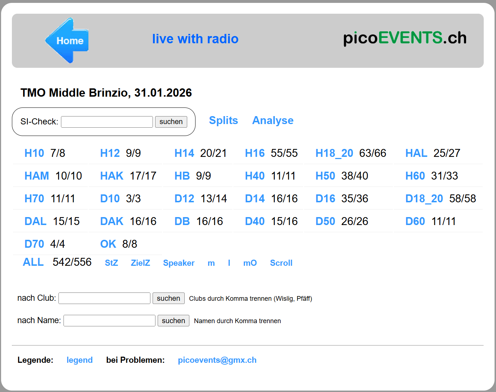
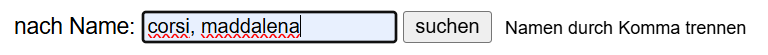
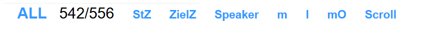
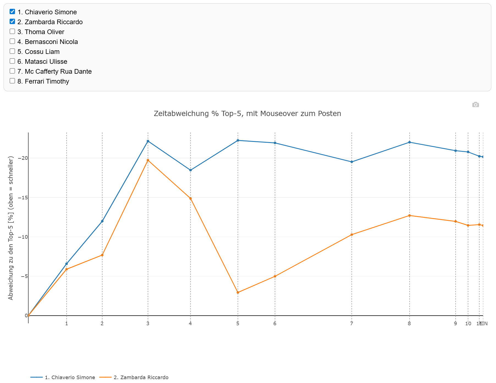
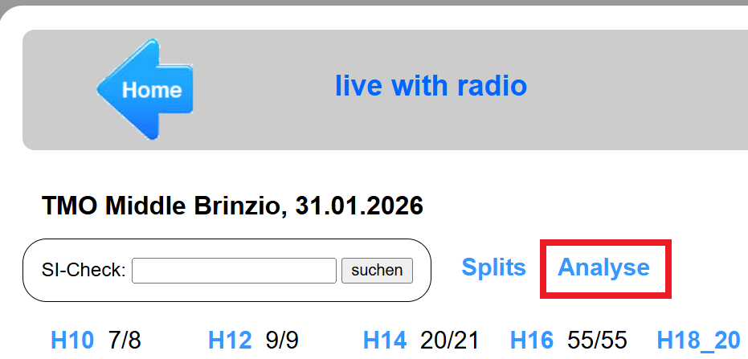
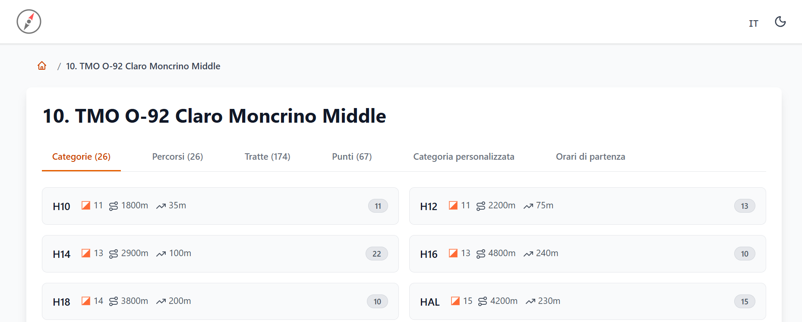

Portale PicoEvents - Per i concorrenti¶
La pagina di visualizzazione delle classifiche contiene dati interessanti soprattutto per i concorrenti, ma anche gli organizzatori possono trovare pagine molto utili (es. m e mO).
Visualizzazione classifiche¶
-
Accedere al portale di PicoEvents via il QR Code affisso al centro gara o via results.picoevents.ch. Di regola si accede direttamente alla pagina della gara, altrimenti viene mostrata una lista di gare dalla quale scegliere.
 -
Selezionare la propria categoria per vedere la classifica attuale.

- Ordinare i concorrenti per orario di partenza, tempo di gara, ecc. selezionando l'intestazione della colonna (
Start,Finish).
I dati sono ordinati secondo la colonna in rosso. - Categorie con punti radio hanno colonne aggiuntive con i tempi relativi al punto radio.
In questo esempio, il punto222.

- Tempi di gara:
- in nero: sono i tempi registrati all'arrivo con i punti radio, prima dello scarico chip e del controllo della sequenza dei punti.
- in verde e grassetto: tempi confermati dopo la lettura chip, per concorrenti classificati (tutti i punti corretti).
- Stato di classifica:
mp: manca puntoresgd: ritiratoncl.: non classificatooverT: fuori tempo massimodisq: squalificatohorc: fuori garadns: non partito
- La classifica viene aggiornata automaticamente ogni 30 secondi.
- Usa
open new windowper aprire la classifica in una pagina separata se vuoi visualizzarne diverse contemporaneamente.
- Ordinare i concorrenti per orario di partenza, tempo di gara, ecc. selezionando l'intestazione della colonna (
-
Filtra i risultati per mostrare solo i concorrenti di una o più società (separate da virgola).

- Filtra i risultati per mostrare solo i concorrenti di una o più famiglie (separate da virgola).
 - Seleziona liste speciali.
ALL: mostra tutte le categorie in una sola lista.
Nota: i numeri accanto a ALL indicano i concorrenti arrivati rispetto a quelli iscritti.StZ: mostra la griglia di partenza, cioè tutti i concorrenti in ordine di partenza.ZielZ: mostra tutti i concorrenti nell'ordine di arrivoSpeaker: da scoprire...m: elenca i concorrenti ancora nel bosco.
Nota: questa lista è utile soprattutto per i collaboratori all'arrivo o al rifornimento.l: chip noleggiatimO: elenco di concorrenti che hanno terminato la gara (hanno timbrato ilFinishradio) ma non hanno ancora scaricato il chip.
Nota: lista utile ai collaboratori IT per sapere chi ha dimenticato di scaricare e poterlo quindi cercare al centro gara.Scroll: permette di scegliere una categoria e vederela scrollare automaticamente.
Analisi gara con PicoEvents¶
Il portale PicoEvents mostra inizialmente solo i tempi di partenza, di gara e eventualmente i tempi di passaggio ai punti radio.
Dopo la partenza dell'ultimo concorrente, il portale mostra anche i tempi intermedi con relativi grafici, permettendo l'analisi di gara già prima che sia effettivamente terminata.
- Nella visualizzazione della liste di categorie, premi su
Splitspoi seleziona la categoria.

In alternativa, nella visualizzazione della classifica di una categoria, seleziona il relativo tasto Splits, ad es.Splits_H12. - Scrolla la lista verso destra per vedere tutti i tempi intermedi.

- I migliori tempi di tratta sono mostrati in verde e grassetto.
- Buoni tempi sono mostrati in verde
- Tempi particolarmente lenti sono marcati in rosso.
- Nella parte bassa della pagina, seleziona i concorrenti per vederne il grafico.
- La riga orizzontale corrisponde al tempo medio dei migliori 5 di tratta. Quelli più veloci sono sopra la riga, quelli più lenti sotto.
- Usa l'îcona della macchina fotografica nell'angolo in alto a destra per salvare il grafico.
- Posiziona il mouse sul grafico a un punto per vedere il distacco di tratta e il rango relativo a quel punto.
Esempio:

- Simone ha vinto la gara(
Schlussrang: 1=rango finale: 1). Po 4 (77): Punto 4, numero 7702:28(2)+00:32: tempo di tratta del Simone (02:28), secondo rango di tratta, 32 secondi di distacco dal migliore.08:20(1)+00:00: tempo di gara del Simone al 4. punto (08:20), rango a quel punto (primo), distacco dal primo (0:00).
- Simone ha vinto la gara(
Analisi gara con OL-Zimaa¶
Dopo la partenza dell'ultimo concorrente, il portale PicoEvents attiva anche l'analisi dei dati via un portale esterno.
- Nella pagina principale della gara, seleziona
Analyseper accedere al sito esternoOlana - Orienteering Results Analysissu ol.zimaa.ch  - Questo sito permette varie analisi, ad esempio analisi di tratta da punto A a punto B indipendentemente dalla categoria.
- Cambia la lingua nell'angolo in alto a destra.
- Seleziona l'anno per accedere a tutte le gare passate, anche non gestite da PicoEvents.